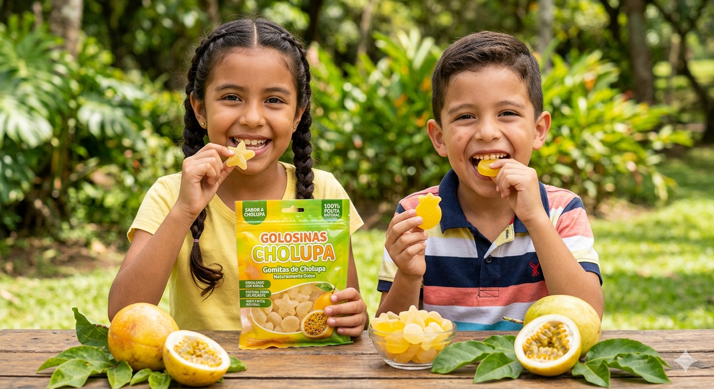
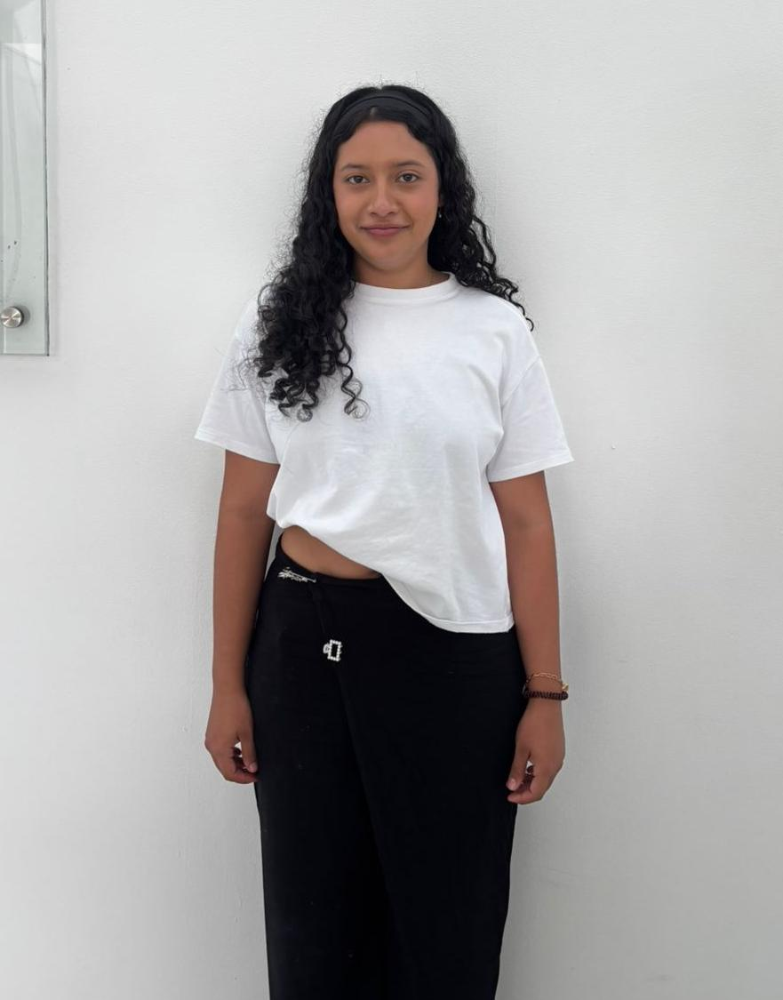
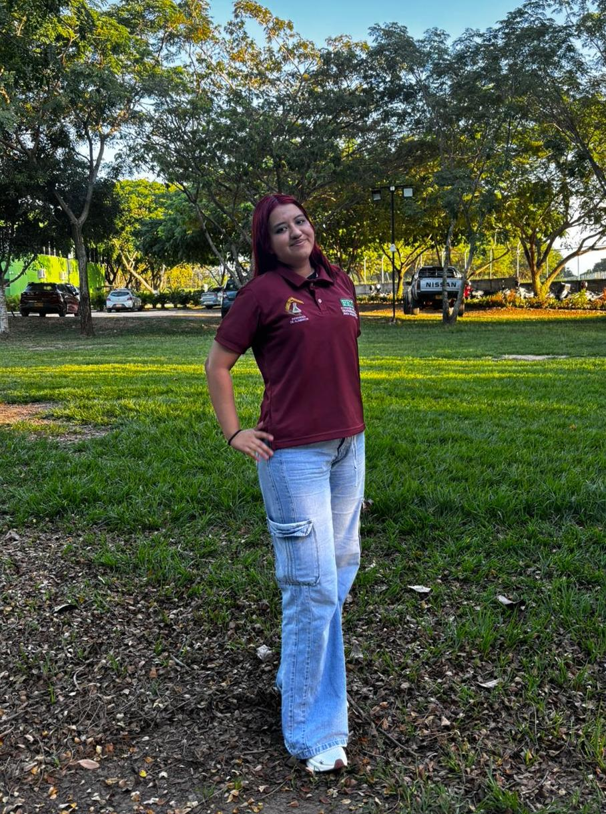
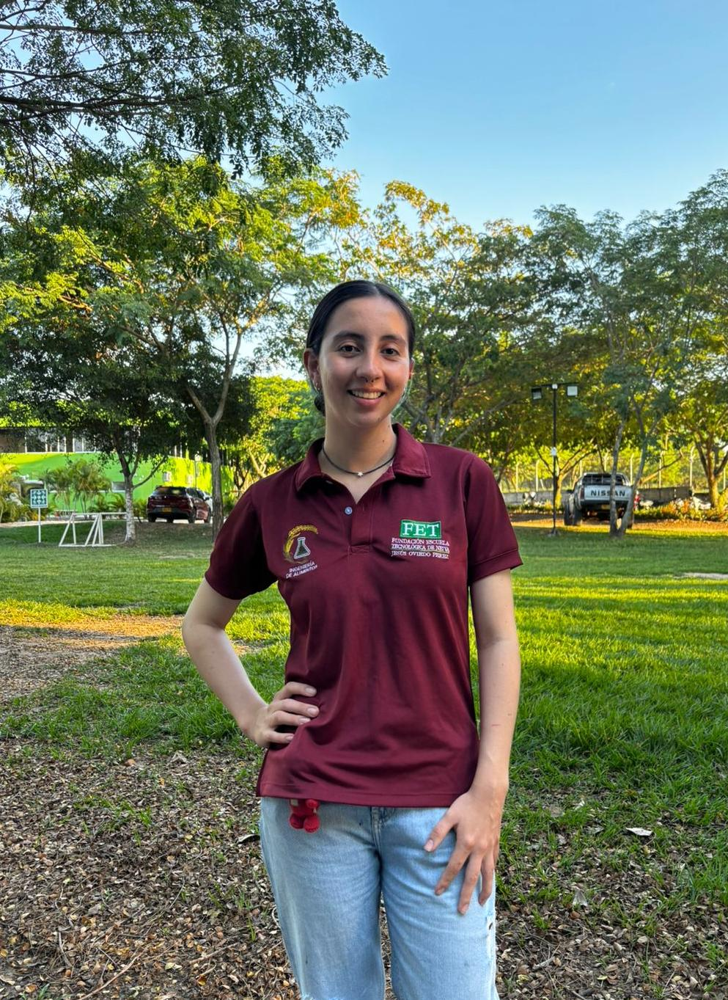
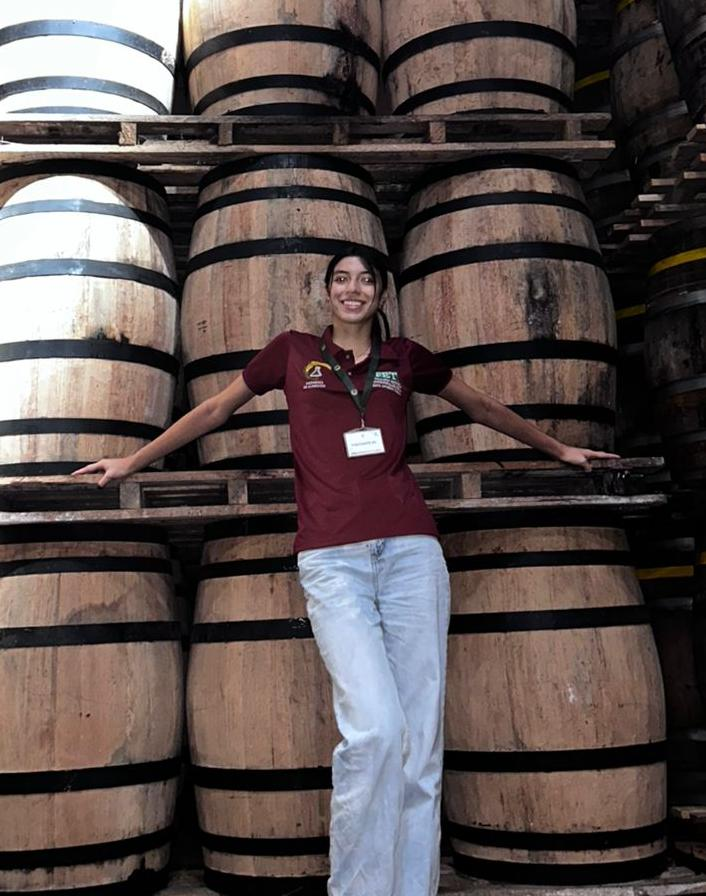
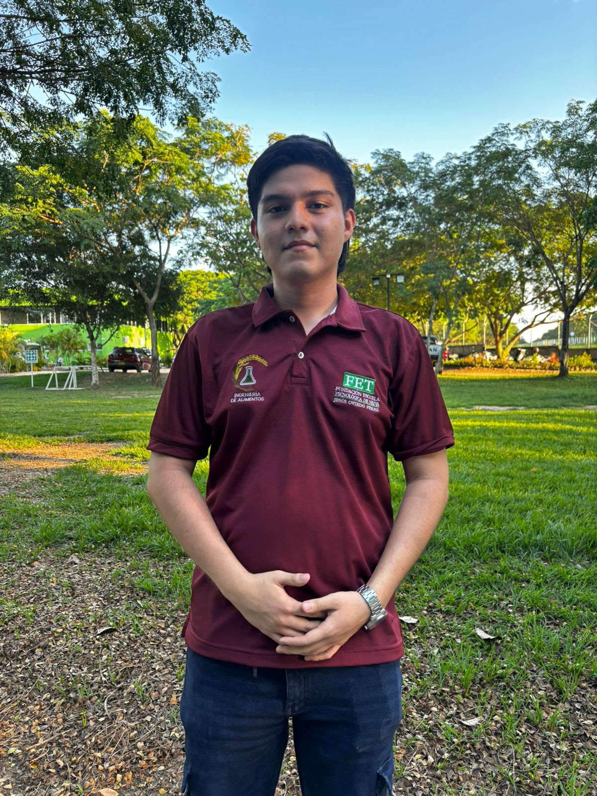

CholuGomitas
Gomitas artesanales a base de cholupa.Natural
Usa ingredientes de origen vegetal como pectina y stevia, evitando depender de altos contenidos de azúcar refinado.
Regional
Resalta la cholupa como fruta representativa del Huila, aprovechando su sabor exótico y su identidad gastronómica.
Innovador
Busca transformar una golosina tradicional en una opción más nutritiva, atractiva y con valor agregado.

Filosofía corporativa
Misión y visión
Misión
Transformar la riqueza frutal de nuestra región en experiencias de sabor únicas, ofreciendo gomitas artesanales a base de cholupa que combinen nutrición y placer.
Visión 2030
Ser reconocidos como la marca líder en confitería frutal innovadora, posicionando a la cholupa en el mercado nacional e internacional como referente de sabor exótico.
Objetivos
Lo que busca el proyecto.
Objetivo general
Desarrollar y optimizar gomitas a base de pulpa de cholupa, mediante la formulación, estandarización del proceso y caracterización fisicoquímica y sensorial, con el fin de evaluar su viabilidad tecnológica y potencial de aprovechamiento agroindustrial.
Establecer formulaciones variando concentraciones de pulpa de cholupa y agentes gelificantes.
Evaluar propiedades fisicoquímicas como pH, °Brix, acidez y aceptabilidad sensorial.
Promover el aprovechamiento agroindustrial de la cholupa como materia prima autóctona del Huila.
Nosotros
El equipo detrás de CholuGomitas.

Allison Yineth Vargas Salamanca
Mayra Liliana Benavidez Vargas

Ximena Carvajal Amezquita
Sara Valentina Herrera Zambrano

María Paula Llanos Ramírez

Heidy Lorena Salazar Becerra

Eddy Santiago García Rodríguez
Propuesta web
CholuGomitas está lista para presentarse.
Esta landing page puede usarse para presentar la idea del producto, explicar el proyecto y mostrarlo como una propuesta innovadora de confitería saludable.